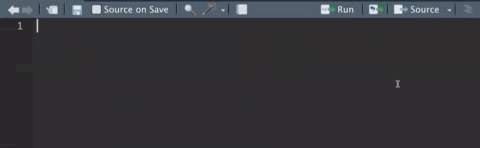

Lab Ib: Inputs and Outputs
1 Introduction
In this lab we will start a shiny app from scratch and develop it to generate a few interactive figures.
Objectives:
- Load our own data into the app.
- Generate Inputs and Outputs.
- Create interactive visualizations.
We will start loading some libraries we will be using:
# Load the ibraries
library(shiny)
library(dplyr) # For data manipulation
library(ggplot2) # For creating the figuresThe data we will be using is contained in the STNet library, you can access to the data using::
# Make sure you have installed the most recent verison of STNet:
# devtools::install_github('jpablo91/STNet')
library(STNet) # Load the library
data("vac") # get the dataIf you have a look in your environment, you will see that the dataset is available there now, you can get examine the first observations:
head(vac)## CVE_MUN CVE_LOC NOM_MUN LONG LAT YEAR TOTAL_HATOS TOTAL_BOV
## 1 15105 151050284 Tlatlaya -100.2739 18.37306 2007 0 0
## 2 15105 151050261 Tlatlaya -100.3033 18.38111 2007 4 36
## 3 15105 151050042 Tlatlaya -100.2933 18.38361 2007 41 1040
## 4 15105 151050045 Tlatlaya -100.2881 18.38417 2007 47 1632
## 5 15105 151050086 Tlatlaya -100.3111 18.39083 2007 21 287
## 6 15105 151050074 Tlatlaya -100.3106 18.39917 2007 88 3663
## VAC_BOV HATOS_VAC
## 1 0 0
## 2 0 0
## 3 90 2
## 4 0 0
## 5 60 1
## 6 2260 13The library shiny provides several functions to create our app. The main function is shinyApp, which will ask for two arguments: ui and server. In this lab we will create two objects that contains all the necessary to be used as arguments for the shinyApp() function.
2 User interface (UI)
The user interface (UI) is where we will define the type of input and outputs that our app will have, as well as any relevant information for the user.
The inputs in shiny are defined with a function that will correspond to the type of information we want the user to provide. For example, if we want to introduce a categorical variable, we call use the function selectInput(); If we want a numeric variable, we can use sliderInput() or numericInput(). Since all the input functions in the shiny library contains the word Input, we can use the autocomplete function in R to search what options we have for different type of inputs:

Similarly, the outputs in Shiny has to be specified according to the type of outputs we want to include. For example, there are different functions to specify if we want to output a plot (plotOutput()), a table(tableOutput), or other types we will see later.
# Define the UI
ui <- fluidPage(
# Panel for the app title
titlePanel("Lab 1"),
# side panel
sidebarPanel(
# Inputs for region
selectInput(inputId = "Mun", # Unique ID for our input
label = "Municipios:", # Label to describe the input
choices = unique(vac$NOM_MUN), # Define the choices
multiple = T, # allow selection of multiple choices
selected = unique(vac$NOM_MUN)) # Initial selection
),
# Output panels
mainPanel(
plotOutput("VacMun") # Time series figure
)
)3 Server
The server must include all the processes that our app will execute.
# Define server logic required to draw a histogram
server <- function(input, output) {
# We will create a reactive object (listens to changes in the UI)
x <- reactive({
p <- vac %>% # This is our data
filter(NOM_MUN %in% input$Mun) # Filter the observations that matches the input
})
# Then we will create out plot
output$VacMun <- renderPlot({
x() %>% # This is our reactive object
group_by(YEAR) %>% # We group by year
summarise(Vac = sum(VAC_BOV)) %>% # get the sum of Vaccinated
ggplot(aes(x = YEAR, y=Vac)) + # Call ggplot2
geom_bar(position="dodge", stat="identity", fill = "deepskyblue4") + # add a bar layer
# add labels for our plot
labs(x = "Year", y = "Vaccine doses applied",
title = "Application of rabies vaccine")
})
}4 Running the app
In the previous lab, we used the Run App button to start the app, what this button does is just send the code to the console, so we can manually run the app by just running the code.
# integrate the app components
shinyApp(ui = ui, server = server)5 Excercise
The STNet library contains 2 other data sets we will be using in thus workshop, to access them you can use:
data("vigilancia")
data("captura")Examine one of the data sets and think what other types of plots we can make? what other inputs do you think we could integrate? we can discuss this in the group.